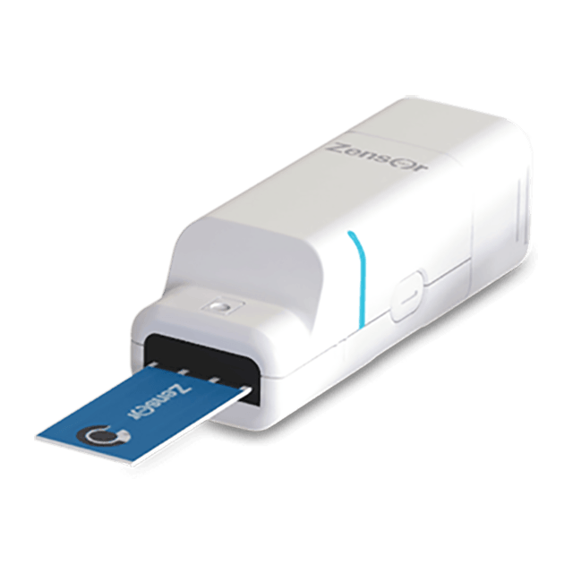

- 電化學相關（5)
- 化學感測器實擬分析儀 - Zensor Simulator(4)
- ECAS100
- ACIP100
- Optical + EC
- 電化學偵測器 - Zensor ECD(1)
- SF100
- 網版印刷電極 - Zensor SPE(7)
- 電極客製服務
- TE100 碳三電極
- SE100 碳單電極
- AG100 銀電極
- AUSE100 金電極
- SAUTE100 金電極
- AUTE200 金電極
- 無線&多通道恆電位儀 / 電化學分析儀 - Zensor MCP(2)
- ECWP100
- MCP100
- 其他產品(3)
- CS100
- CM100
- CT100
- 化學感測器實擬分析儀 - Zensor Simulator(4)
- 相關公司（8）
禪譜產品分類
- 相關公司（8）
Hello
Welcome to Zensor
{kind=link}
⚡︎電化學分析及交流阻抗（EIS-AC）功能

CV (Cyclic Voltammetry)
LSV (Linear Scan Voltammetry)
SWV (Square-Wave Voltammetry)

DPV (Differential Pulse Voltammetry)
IT (Amperometry)
OCP (Open-Circuit Potential)
⚡︎多種接口
傳統電極網版電極都適用
⚡︎可選擇離線模式獨立使用
5.0吋彩色觸控螢幕，可無需搭配電腦使用
⚡︎模擬器功能-晶片測試模式
自由編輯程序，晶片可置換
無論您是在開發產品的原型機，還是要建立標準測試方法，都可以使用我們的模擬器功能。您可將電化學掃描方法，檢測持續時間，富集時間，矯正曲線等自由搭配後燒錄到晶片中，即可在無電腦的狀況下，一鍵完成測試，並在熒幕上直接讀取結果。

只要四個步驟完成程序編輯
(Procedure / Data analysis / Concentration transfer / Action to burn-in)
各種電化學分析及交流阻抗方法交互編輯使用
(CV / IT / ACIP / IMPT / IMPT)
可搭配樣品進樣狀況交互編輯使用
(Wating for sample / Wating for second / Wating for trigger button)
⚡︎可應用於廣泛領域的產品開發
模擬器應用於醫療診斷器材的開發案例
| ElectrochemicelMethods | (A)Cyclic voltammeter(cv) (B)Amperometry (C)Open circuit potentiometry |
|---|---|
| Range | (A)Voltage range scan :+2~-2(v) OCP voltage range:+1800mV~-1800mV (B)Current range:1x10-3 ~1x10 -10 (A) (C)Current resolution:0.5% of current range (D)Maximum wireless distance:20m |
| Operation system | window 7 and / or above |
| Communication | USB1.1 and 2.4G RF |
| Power | (A)Remoter input: DC 5V,2A Connector input:DC 5V,0.5A (B)Battery life:1~6 Hr |
| Dimension | Remoter input:125x73x25mm Connector input: 58x20.5x18.5mm |
| Weight | Remoter input: ~150g Connector input:~25g |
|  |  |  |  | |
|---|---|---|---|---|
| ECWP100-single | ECWP100 | MCP100 | ECAS100 | ACIP100 |
| 無線連接 | 無線連接 | 有線連接 | 有線連接+離線使用 | 有線連接+離線使用 |
| - | - | - | 有模擬器功能（編輯晶片）備註1 | 有模擬器功能（編輯晶片）備註1 |
| 直接使用網版印刷電極 | 直接使用網版印刷電極 | 配有網版印刷電極介面 | 配有網版印刷電極介面 | 配有網版印刷電極介面 |
| 可選購三電極鱷魚夾介面 | 可選購三電極鱷魚夾介面 | 配有三電極鱷魚夾介面 | 配有三電極鱷魚夾介面 | 配有三電極鱷魚夾介面 |
| 單通道 | 最多八通道 | 十通道 | 單通道 | 單通道 |
| 需要配備PC | 需要配備PC | 需要配備PC | 5.0吋彩色觸控螢幕 | 5.1吋彩色觸控螢幕 |
| CV/IT/OCP | CV/IT/OCP | CV/IT/OCP | CV/LSV/SWV/DPV/IT/OCP | CV/IT |
| - | - | - | - | ACIP交流阻抗 |
| - | - | - | - | IMPT |
| - | - | - | - | IMPE |
| +2~-2V | +2~-2V | +2~-2V | +2~-2V | |
| 10-3~10-10A | 10-2~10-10A | 10-2~10-9A | 10-3~10-9A |
備註一：模擬器功能：可將測試步驟燒錄到可替換的晶片中，即可離線大量測試樣品，並直接讀取所需數值，模擬產品模型開發的過程